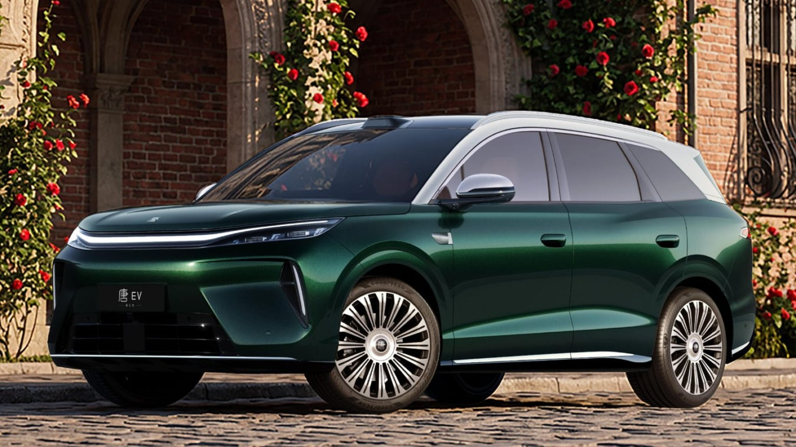

for DC Advanced UX Team.Vivi · Yohan · Libby · Lim Jisu · Katey · Anna
Latest News

Cockpit
BYD Tang: a Star Ring display in two new cabins
BYD has released the interior of the third-generation Tang, also called the 8 Series, in Dune Beige and Amber Brown. The images centre on a display the company names the Star Ring, set under a panoramic glass roof, with diamond-quilted leather and ambient light running through the dashboard and door panels. The SUV is 5,045 mm long, 1,980 mm wide and 1,760 mm tall, on a 2,950 mm wheelbase, with 20- or 21-inch wheels. Screen size and whether the Star Ring rotates are not in the release, so this is a cabin reveal rather than a finished HMI spec.
BYD가 3세대 탕, 이른바 8시리즈 탕의 실내를 공개했다. 색은 듄 베이지와 앰버 브라운이다. 이미지의 중심은 ‘스타 링’이라는 디스플레이다. 위에는 파노라마 글라스 루프가 있고, 시트는 다이아몬드 퀼팅 가죽이며 앰비언트 라이트가 대시보드와 도어 패널을 따라 흐른다. 전장 5,045mm, 전폭 1,980mm, 전고 1,760mm, 휠베이스 2,950mm에 20인치 또는 21인치 휠이다. 화면 크기와 회전 여부는 발표에 없다. 완성된 HMI 제원이라기보다 캐빈 공개다.
Apple has invited press to a “Welcome home” hands-on in Tribeca on 13 October, and Bloomberg’s Mark Gurman describes the headliner as a smart-home hub, unofficially HomePad. The tabletop version, codenamed J490, puts a 6-inch square screen on a polished metal arm over a round perforated speaker, a pose close to the 2002 iMac G4. A wall version, J491, drops the arm for a thin square base. Both need mains power, recognise who is speaking, and hide private content in a visitor mode. The interface is said to borrow Apple Watch and StandBy widgets, with one front camera for FaceTime.
애플이 10월 13일 트라이베카에서 ‘Welcome home’ 핸즈온에 언론을 초대했다. 블룸버그의 마크 거먼은 주인공을 스마트홈 허브, 가칭 홈패드라고 설명한다. 탁상형 코드명 J490은 6인치 정사각 화면을 둥근 타공 스피커 위의 광택 금속 암에 올린다. 2002년 아이맥 G4와 가까운 자세다. 벽걸이형 J491은 암을 빼고 얇은 사각 베이스를 쓴다. 둘 다 상시 전원이 필요하고, 누가 말하는지 알아보며, 방문자 모드에서는 개인 내용을 가린다. 인터페이스는 애플 워치와 스탠바이 위젯을 빌리고, 전면 카메라 하나로 페이스타임을 연다고 한다.
Love And Money designed the identity for Orchid, the mini synth from Telepathic Instruments, co-founded by Tame Impala’s Kevin Parker. The hardware has a 128 by 128 pixel screen, and the UI typeface on it is called Chunky Roll. Cap height sits 14 to 18 pixels once spacing is reserved, and each pixel is two tall and one wide so the counters stay open. The wordmark starts from Pangram Pangram’s PP Editorial Neue, then adds hand-drawn ligatures that bleed into each other, meant to read as a note swelling or dying rather than a flower opening. Ignacio Germade led the product design in parallel with the identity.
Love And Money为Telepathic Instruments的迷你合成器Orchid做了识别系统。公司联合创始人是Tame Impala的Kevin Parker。机器自带128×128像素屏幕，界面字体叫Chunky Roll。留出间距后，字高大约14到18像素，像素块是竖向两格、横向一格，让字腔内的空白还能读得清。字标从Pangram Pangram的PP Editorial Neue出发，再加上手绘连笔，笔画互相渗开，想表达的是一个音符涨起又落下，而不是花在开放。产品设计由Ignacio Germade并行推进。
러브 앤 머니가 텔레패틱 인스트루먼츠의 미니 신스 오키드 아이덴티티를 만들었다. 공동 창업자에는 테임 임팔라의 케빈 파커가 있다. 본체 화면은 128×128 픽셀이고, 그 위의 UI 서체 이름은 청키 롤이다. 간격을 뺀 글자 높이는 14에서 18픽셀이고, 픽셀은 세로 두 칸·가로 한 칸이라 닫힌 공간이 막히지 않는다. 워드마크는 팬그램 팬그램의 PP 에디토리얼 노이에에서 출발해 손그림 리가처를 더했다. 글자가 서로 번지며, 꽃이 피는 대신 음이 부풀었다가 사그라지는 쪽에 가깝다. 제품 디자인은 이그나시오 헤르마데가 병행했다.
Otherlab’s Lightfoot is now on sale, a two-seat electric scooter that stays under 20 mph (32 km/h). Twin 120 W panels in the body sides, 240 W together, are claimed to add 3–4 miles of range an hour in sun, up to 18 miles a day. The 52 V, 1,560 Wh pack is rated to 37 miles, with a 230 W charger and about a four-hour wall charge. Dual 750 W hub motors are quoted at 160 Nm combined. The cockpit note is small but specific: a Bluetooth display, a 2,000-lumen headlight, an accelerometer taillight and a 120 dB horn. The first 100 Launch Edition scooters are $4,495 in sky blue or solar orange.
아더랩의 라이트풋이 판매를 시작했다. 2인승 전기 스쿠터이고 최고 속도는 20mph, 시속 32km 아래다. 차체 옆면의 120W 태양광 패널 두 장, 합계 240W가 맑은 날 한 시간에 3–4마일, 하루 최대 18마일을 더한다고 한다. 52V 1,560Wh 배터리는 37마일 주행을 표기하고, 230W 충전기로 벽 충전은 약 네 시간이다. 750W 허브 모터 두 개의 합산 토크는 160Nm로 적혀 있다. 콕핏에서 구체적인 것은 블루투스 디스플레이, 2,000루멘 전조등, 가속도계로 켜지는 후미등, 120dB 경적이다. 런치 에디션 100대는 4,495달러, 스카이 블루 또는 솔라 오렌지다.
LiveWire’s S4 Honcho Street has been accepted by the Motorcycle Safety Foundation for rider training. The bike weighs 266 lb (121 kg), the seat is under 30 inches, and there is no clutch or gearbox: twist and go. Top speed is rated at 59 mph (95 km/h), but two reduced profiles stand in for first and second gear, capping the bike at 18 mph (29 km/h) or 28 mph (45 km/h). Range is quoted at 53 miles. The street version starts at $5,499, the base bike at $4,999. The interface point is those speed caps, not a new display.
라이브와이어 S4 혼초 스트리트가 모터사이클 안전 재단의 라이더 훈련용 기준을 통과했다. 차중 266파운드, 121kg이고 시트고는 30인치 아래다. 클러치와 변속기는 없다. 스로틀을 돌리면 나간다. 최고 속도는 59mph, 시속 95km로 표기되고, 1단과 2단을 대신하는 훈련 프로파일 두 개가 속도를 18mph(29km/h) 또는 28mph(45km/h)에서 막는다. 주행거리는 53마일이다. 스트리트 버전은 5,499달러, 기본형은 4,999달러부터다. 인터페이스에서 볼 점은 새 화면이 아니라 이 속도 제한이다.
Unity has announced Spark, a browser tool for describing, editing and publishing a game without the full Unity Editor. CEO Matt Bromberg’s line is that it is not “one-shotting”: a prompt can lay down a playable base, but someone still has to design, revise and finish it. Visuals are meant to come mostly from the Asset Store, with artists credited and paid. The Financial Times says Spark can generate some assets, but that is not the pitch. Projects can be shared by URL, and finished games can go out through Google’s Playground. A closed beta is set for later in 2026. Free and paid tiers are planned. The commercial model is not final.
유니티가 스파크를 발표했다. 브라우저에서 게임을 설명하고 고치고 배포하는 도구이고, 유니티 에디터 전체를 열 필요가 없다. CEO 맷 브롬버그의 말은 한 번의 프롬프트로 끝내는 도구가 아니라는 것이다. 프롬프트는 플레이 가능한 밑바탕을 깔 수 있지만, 설계와 수정과 마무리는 사람이 한다. 비주얼은 주로 에셋 스토어에서 오고, 작가는 크레딧과 보수를 받는다. 파이낸셜 타임스는 일부 에셋 생성도 가능하다고 전했지만 그것이 핵심 메시지는 아니다. 프로젝트는 URL로 공유하고, 끝난 게임은 구글 플레이그라운드로 내보낼 수 있다. 비공개 베타는 2026년 말로 잡혔고, 무료·유료 등급은 예정이며 과금 구조는 미정이다.
Leeds studio Kiss Branding rebranded itself by writing the strategy and then staying out of the design. The mark is a cupid the team named Roger Bowman, built from a rough triangle and a vanishing point across more than 100 drawings by Alex Lancastle, who tested it down to ten pixels. Marco Palmieri animated him. The wordmark, drawn for about a month by design director Alex Phipps, is a script with sharp corners, and the K joins the I so the link can read as a heart or a bow. A horizontal line through the letters is the arrow pulled back.
리즈의 키스 브랜딩이 전략을 글로 남긴 뒤 창립자는 디자인에서 손을 떼는 방식으로 스스로를 리브랜딩했다. 마크는 팀이 로저 보먼이라 이름 붙인 큐피드다. 알렉스 랜캐슬이 거친 삼각형과 소실점에서 시작해 100번 넘게 그렸고, 가로 열 픽셀까지 줄여 읽히는지 봤다. 애니메이션은 마르코 팔미에리가 맡았다. 디자인 디렉터 알렉스 핍스가 한 달가량 그린 워드마크는 각진 손글씨이고, K와 I가 붙어 하트나 활로 읽힌다. 글자를 가로지르는 선은 당겨진 화살이다.
TypoCircle, the volunteer-run type club founded in 1976, is marking 50 years with 50 posters. The brief for every designer was the same: include the number 50 and the club’s black dot. Names on the set include Paula Scher, Margaret Calvert, Matt Willey, JKR, Rejane Dal Bello, Anthony Burrill and Alan Kitching. Each poster is an edition of 50, on sale for £15 until 31 October at typocircle.com/typo50. Talks resume on 29 October. A 50th issue of Circular, designed by Domenic Lippa at Pentagram and Jim Sutherland, is due for members in early 2027.
1976年成立、至今由志愿者运营的字体俱乐部TypoCircle用50张海报纪念50年。给每位设计师的brief一样：必须出现数字50和俱乐部的黑点。名字包括Paula Scher、Margaret Calvert、Matt Willey、JKR、Rejane Dal Bello、Anthony Burrill和Alan Kitching。每张限量50份，15英镑，10月31日前在typocircle.com/typo50发售。讲座10月29日恢复。Pentagram的Domenic Lippa和Jim Sutherland设计的第50期Circular，预计2027年初发给会员。
1976년에 생긴 자원봉사 타입 클럽 타이포서클이 50년을 포스터 50장으로 기념한다. 디자이너마다 브리프는 같다. 숫자 50과 클럽의 검은 점을 넣을 것. 이름에는 폴라 셰어, 마거릿 캘버트, 맷 윌리, JKR, 헤자네 달 벨로, 앤서니 버릴, 앨런 키칭이 있다. 각 포스터는 50부 한정이고 15파운드이며 10월 31일까지 typocircle.com/typo50에서 판다. 강연은 10월 29일에 다시 시작된다. 펜타그램의 도메닉 리파와 짐 서덜랜드가 디자인한 서큘러 50호는 2027년 초 회원에게 간다.
Google Labs has opened Playground, an experimental browser tool for making games by typing. You start from a blank canvas, a starter prompt or guided help, then change physics, rules, characters or the environment in the same conversation and play the result immediately. A gallery already holds about a dozen games, ranked by ratings and play, after a safety screen. Playground is also due to connect to Unity Spark for what Google calls higher-fidelity 3D and the Unity runtime. Access is US-only for now, tiered by a Google AI subscription, with other countries said to follow.
Google Labs开放了Playground，一个在浏览器里用打字做游戏的实验工具。可以从空白画布、起始提示或引导帮助开始，然后在同一段对话里改物理、规则、角色或环境，并马上试玩。站内已经有大约十二款游戏，经过安全筛查后按评分和游玩量排序。Playground还计划接入Unity Spark，谷歌的说法是借此获得更高精度的3D和Unity运行时。目前只对美国开放，按Google AI订阅分档，其他国家据称会随后跟上。
구글 랩스가 플레이그라운드를 열었다. 브라우저에서 글로 게임을 만드는 실험 도구다. 빈 캔버스, 시작 프롬프트, 안내 중 하나에서 시작하고, 같은 대화에서 물리와 규칙, 캐릭터, 환경을 바꾼 뒤 바로 플레이한다. 갤러리에는 이미 열두 편가량이 있고, 안전 심사를 거친 뒤 평점과 플레이로 순서가 매겨진다. 플레이그라운드는 유니티 스파크와도 연결될 예정인데, 구글은 이를 더 높은 충실도의 3D와 유니티 런타임이라고 부른다. 지금은 미국만 열려 있고 구글 AI 구독 등급에 따라 나뉘며, 다른 국가는 뒤에 온다고 한다.
Researchers at Kyushu University, led by Shogo Fukushima, have prototyped a seated viewer that moves the display off the head. A high-backed chair carries a white enclosure in front of the face. Inside, a micromirror array sends a slightly different image to each eye, and the picture is meant to float beyond the chair rather than sit on a screen against the skin. A gyroscope reads the chair’s rotation, so turning the seat changes the view. You cannot walk, and the prototype is much larger than a headset. The group suggests the extra room in the optics might later help with VR sickness. That has not been shown.
규슈대학의 쇼고 후쿠시마 팀이 디스플레이를 머리에서 뗀 좌식 뷰어 프로토타입을 만들었다. 높은 등받이 의자 앞에 흰 함체가 얼굴을 감싼다. 안의 마이크로미러 어레이가 양쪽 눈에 조금 다른 이미지를 보내고, 그림은 피부에 붙은 화면이 아니라 의자 너머에 떠 있게 설계됐다. 자이로스코프가 의자의 회전을 읽어서, 좌석을 돌리면 시야가 바뀐다. 걸을 수는 없고 프로토타입은 헤드셋보다 훨씬 크다. 광학계에 여유가 생기면 나중에 VR 멀미에 도움이 될 수 있다고 팀은 말한다. 그건 아직 보여 주지 못했다.
UK startup YAPA, with product design by Aetha and ex-Dyson designer Tom Parsons, is taking pre-orders on a home phone for children aged five to 14. It has a corded handset, a physical keypad and a small display for caller ID and the address book. Parents approve contacts and calling hours in an app. The phone runs on Wi-Fi, so there is no wall jack. Shells are frosted translucent plastic in Flamingo Fizz, Electric Lagoon and Cloud Spark, with one orange coiled cord across the colourways. Extra covers, in the Nokia Xpress-On tradition, are £19.99. The handset is £99.99. Calls between YAPA phones are free.
영국 스타트업 야파가 5세에서 14세용 가정용 전화의 사전 주문을 받았다. 제품 디자인은 아에타, 전 다이슨 디자이너 톰 파슨스가 맡았다. 유선 송수화기, 물리 키패드, 발신자 표시와 주소록을 보여주는 작은 화면이 있다. 부모는 앱에서 연락처와 통화 가능 시간을 승인한다. 전화는 와이파이에 붙으므로 벽 단자가 필요 없다. 셸은 반투명 프로스트 플라스틱이고 색은 플라밍고 피즈, 일렉트릭 라군, 클라우드 스파크다. 색마다 주황 코일 코드는 같다. 추가 커버는 노키아 엑스프레스온의 방식을 따르고 19.99파운드다. 본체는 99.99파운드다. 야파끼리의 통화는 무료다.
Estonian foundry Tüpokompanii has finished Vee with designer Laura Pappa, from drawings she made after a type course at the Estonian Academy of Arts. The starting point was Bauer’s Venus of 1907, but Pappa was working from screenshots of a digital Venus, itself already a translation of metal type. Aimur Takk and Andree Paat treated that loss as the design: irregular angles, a slightly condensed lowercase, and the unpolished shapes kept rather than corrected into a replica. They describe the aim as simple and friendly, Venus with the awkwardness left in.
에스토니아 파운드리 튀포콤파니가 디자이너 라우라 파파와 함께 서체 비를 마무리했다. 출발은 에스토니아 미술아카데미 타입 수업 뒤에 파파가 그린 스케치이고, 참고는 바우어의 1907년 비너스다. 다만 파파가 본 것은 디지털 비너스의 스크린샷이었고, 그 디지털판은 이미 금속 활자의 번역본이다. 아이무르 타크와 안드레 파츠는 그 손실을 디자인으로 다뤘다. 불규칙한 각도, 약간 좁은 소문자, 복제품으로 다듬지 않고 남긴 거친 형태. 목표는 단순하고 친근한 것, 어색함을 남겨 둔 비너스라고 한다.